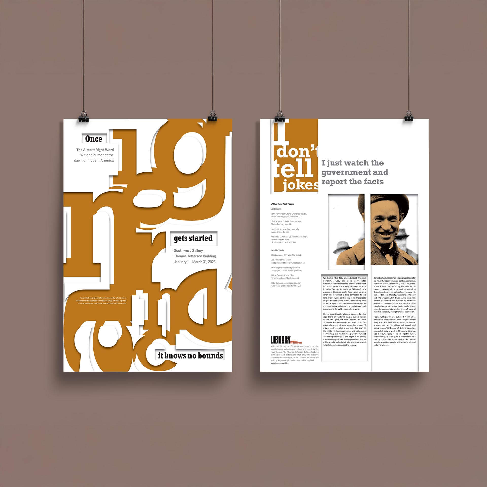

Case Study · Design · 2025
Double-Sided Poster
This poster investigates misinformation's disruptive power through the lens of humorist Will Rogers and his quote: "Once ignorance gets started, it knows no bounds." The design visualizes how disinformation destabilizes clarity and coherence in communication systems.

Concept
Design Approach
The front features enlarged, skewed slab serif letterforms that misalign and overflow, representing how misinformation disrupts legibility and understanding. The back fractures biographical content into irregular columns and image crops, referencing the loss of coherent narrative. Western-inspired colors and rugged typography nod to Rogers' cowboy persona while creating visual tension. The dual-sided format creates dialogue between disruption and information, maintaining legibility while critiquing visual distortion.
Result
The poster successfully creates tension between clarity and chaos, demonstrating how typographic disruption can communicate conceptual themes. The design opens dialogue about information systems and societal trust through visual metaphor.